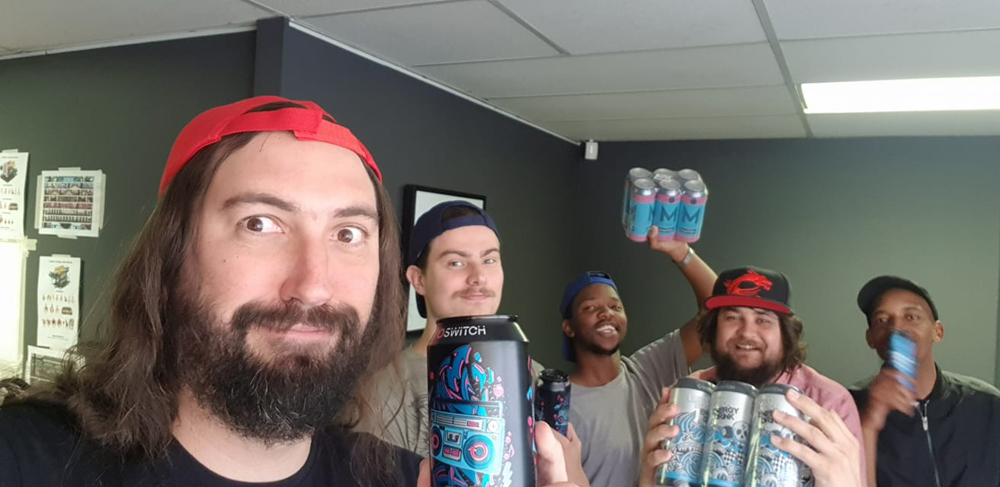

Cali4Ways Games


Authentic beyond belief.
This studio is known for their creation of a South African parody games, however, they did it with such authenticity that it doubled back into becoming an accurate representation of Eastern Joburg culture. Paired with striking and stylized 2D visuals, their game is an outstanding piece of digital Johannesburg art. Hopefully they are still out there creating something.
Location: Fourways, Johannesburg
Founded: 2019
Speciality: 2D Side-scrolling games
Notable works: Boet Fighter
Contact: Cali4Ways Games Facebook
×
 ❮
❯
❮
❯